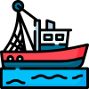

<mat-sidenav-container class="sidenav-container">
  <mat-sidenav #drawer class="sidenav" fixedInViewport
      [attr.role]="(isHandset$ | async) ? 'dialog' : 'navigation'"
      [mode]="(isHandset$ | async) ? 'over' : 'side'"
      [opened]="(isHandset$ | async) === false">
    
    <div class="app-logo-container">
      <!-- first one used for local host when testing -->
        <!--  -->
        
        <!-- <a href="https://www.flaticon.com/free-icons/fishing" title="fishing icons">Fishing icons created by Freepik - Flaticon</a> -->
    </div>

    <mat-nav-list>
      <a class="nav-link"mat-list-item routerLink="map" *ngIf="authenticated"><mat-icon>map</mat-icon> Map</a>
      <a class="nav-link"mat-list-item routerLink="data" *ngIf="authenticated"><mat-icon>table_view</mat-icon> Raw Data</a>
      <a class="nav-link"mat-list-item routerLink="login" *ngIf="!authenticated"><mat-icon>login</mat-icon> Login</a>
      <a class="nav-link"mat-list-item routerLink="about"><mat-icon>question_mark</mat-icon> About</a>
      <a class="nav-link"mat-list-item (click)="onLogout()" *ngIf="authenticated"><mat-icon>logout</mat-icon > Logout</a>
      
    </mat-nav-list>
  </mat-sidenav>
  <mat-sidenav-content>
    <mat-toolbar color="primary">
      <button
        type="button"
        aria-label="Toggle sidenav"
        mat-icon-button
        (click)="drawer.toggle()"
        *ngIf="isHandset$ | async">
        <mat-icon aria-label="Side nav toggle icon">menu</mat-icon>
      </button>
      <span>2nd Mate</span>
    </mat-toolbar>
    <!-- Add Content Here -->
    <div class="app-container">
      <router-outlet></router-outlet>
    </div>

  </mat-sidenav-content>
</mat-sidenav-container>
